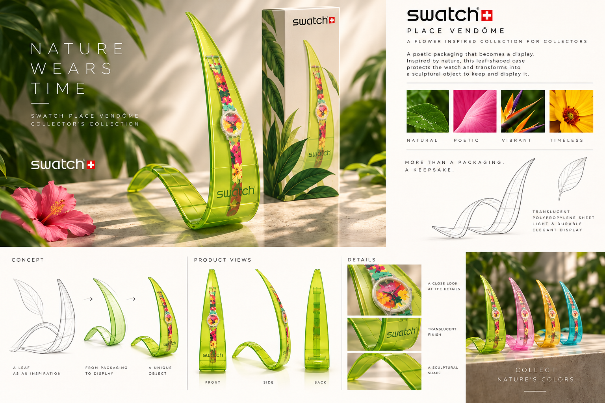

Concept 01
Écrin Feuille — Nature Wears Time
Une feuille translucide se déploie en un mouvement continu pour accueillir la montre et la présenter verticalement. Sa courbe protège le produit tout en créant une silhouette sculpturale immédiatement identifiable. Décliné dans plusieurs couleurs printanières, l’écrin devient un objet de collection que l’on conserve et expose bien après l’achat.